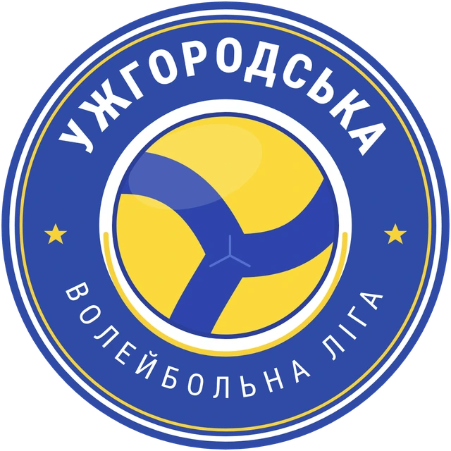

Команда А
0
0
Команда Б
0
0
почати матч

Чекаємо на пульт судді…
Рахунок зʼявиться, щойно суддя почне матч.
Це табло показує рахунок лише з пульта, відкритого в цьому ж браузері.
Для стріму, іншої програми чи пристрою візьміть посилання в пульті:
Меню → Посилання на матч → Міні-табло.